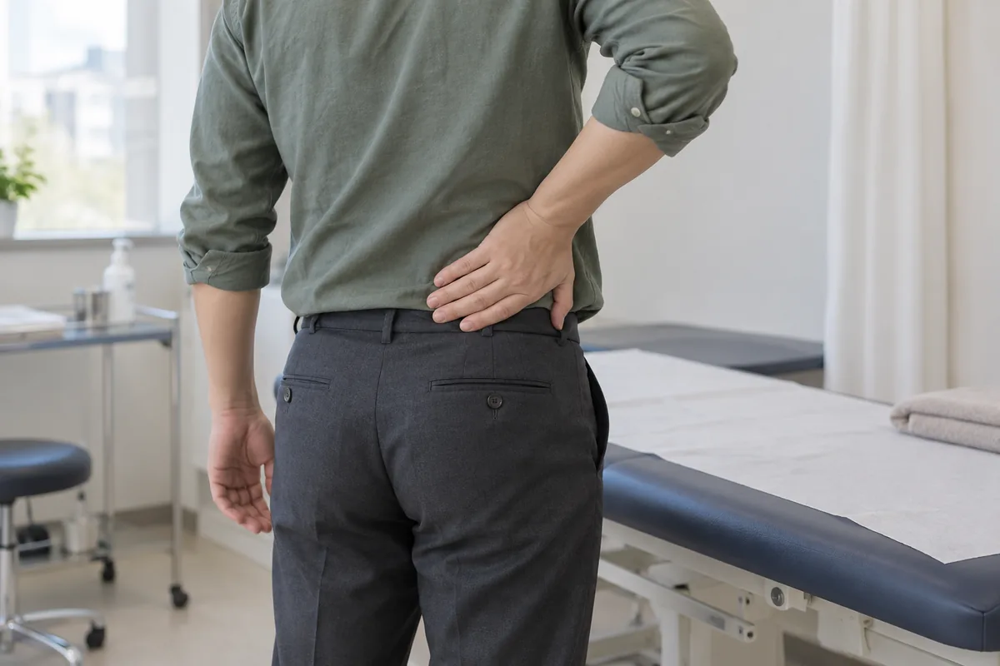
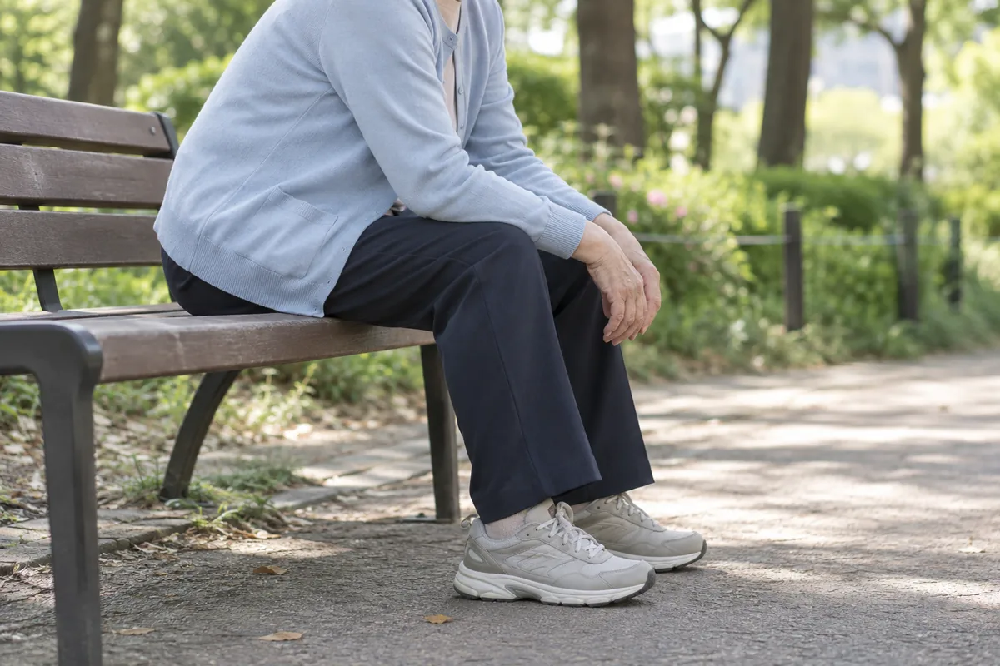
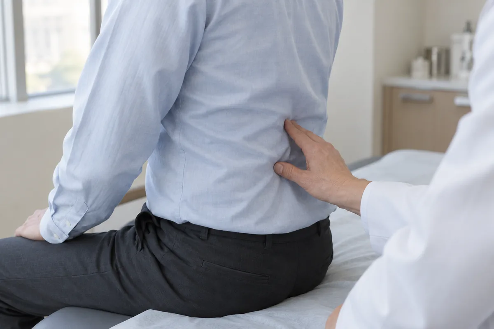
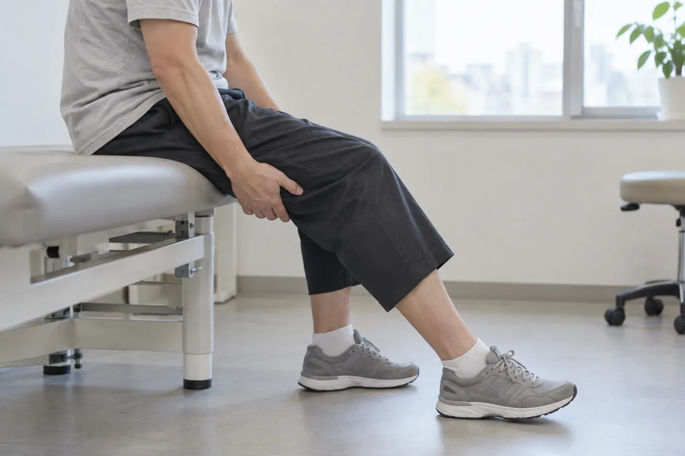

허리·골반
허리와 골반 주변 통증은 근육과 인대, 디스크, 관절 등 다양한 부위에서 시작될 수 있습니다. 다리로 퍼지는 통증과 저림, 걷거나 앉을 때의 변화를 함께 확인합니다. 진찰 결과와 일상에서의 불편 정도를 살펴 상태에 맞는 관리와 치료 방향을 안내합니다.
통증의 위치와 움직임, 생활 습관을 함께 살핀 뒤 필요한 치료 방향을 안내합니다.
CONDITIONS
허리·골반 주요 질환

허리디스크(요추 추간판 탈출증)
허리뼈 사이의 디스크가 밀려나 주변 신경을 자극하거나 압박하는 질환입니다. 나이에 따른 퇴행성 변화, 반복되는 허리 부담이나 외상 등이 관련될 수 있습니다. 허리 통증의 강도뿐 아니라 다리의 감각과 근력, 보행 상태를 함께 평가합니다.
허리에서 엉덩이와 다리로 뻗치는 통증, 발의 저림이나 감각 저하가 나타날 수 있습니다. 다리나 발에 힘이 빠지는 경우도 있습니다. 새로 생긴 대소변 조절 이상이나 회음부 감각 저하가 동반되면 즉시 응급 진료를 받아야 합니다.

척추관 협착증
척추 안에서 신경이 지나는 통로가 좁아져 신경이 눌리는 질환입니다. 관절과 디스크의 퇴행성 변화, 주변 인대가 두꺼워지는 현상 등이 관련될 수 있습니다. 영상 소견만이 아니라 걸을 수 있는 거리와 자세에 따른 증상 변화를 함께 살핍니다.
서 있거나 걸을 때 엉덩이와 다리가 아프거나 저려 쉬어 가게 될 수 있습니다. 앉거나 허리를 약간 앞으로 숙이면 불편이 줄어드는 경우가 있습니다. 다리의 감각이 둔해지거나 힘이 떨어져 보행에 지장을 주기도 합니다.
급·만성 요통 및 요추 염좌
요통은 허리 주변의 통증을 뜻하며 원인이 항상 한 가지로 확인되는 것은 아닙니다. 요추 염좌는 갑작스러운 동작이나 부담으로 근육과 인대가 손상된 상태입니다. 통증의 기간과 유발 동작, 신경 증상 여부를 살펴 다른 원인과 구분합니다.
허리를 숙이거나 펼 때 묵직하게 아프고 근육이 뻣뻣하게 굳을 수 있습니다. 자세를 바꾸거나 오래 같은 자세를 유지할 때 불편해지기도 합니다. 발열이 동반되거나 쉬어도 통증이 지속되면 다른 원인이 있는지 진료가 필요합니다.

척추후관절 증후군
척추 뒤쪽에서 움직임과 안정성을 돕는 후관절이 통증의 원인이 되는 상태입니다. 퇴행성 변화나 외상 등이 관련되며 주변 근육의 긴장이 동반될 수 있습니다. 다른 요통과 증상이 비슷하므로 특정 동작이나 영상만으로 확정하기는 어렵습니다.
허리 한쪽이나 양쪽이 뻐근하고 통증이 엉덩이와 허벅지로 퍼질 수 있습니다. 허리를 뒤로 젖히거나 비틀 때 불편을 느끼기도 합니다. 이런 양상은 다른 질환에서도 나타나므로 통증 부위와 신경 증상을 함께 확인해야 합니다.

좌골신경통
허리에서 다리로 이어지는 신경이 자극되면서 생기는 방사통을 말합니다. 하나의 병명이라기보다 디스크 탈출이나 척추관 협착 등에서 나타날 수 있는 증상입니다. 통증이 퍼지는 경로와 감각·근력 변화를 살펴 원인이 되는 질환을 구분합니다.
주로 한쪽 엉덩이에서 다리 뒤쪽과 발까지 당기거나 화끈거리는 통증이 이어집니다. 저림과 감각 저하가 동반되며 기침이나 움직임에 심해지기도 합니다. 양쪽 다리의 심한 마비나 대소변 조절 이상이 생기면 즉시 응급 진료가 필요합니다.